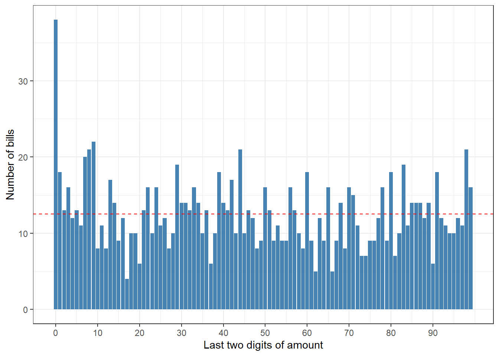

31 Nigrini’s Tests for Unusual Amounts
In Chapter 30 we met Mark Nigrini, the accounting professor who turned Benford’s Law into a practical tool for fraud detection. Benford analysis is only one part of his work. Nigrini also put together a full set of simple tests, which forensic auditors now use all over the world. Each test looks at the amounts in a data set from a different angle. Each one is good at catching a different kind of problem.
The good thing about these tests is that none of them needs advanced statistics. They mostly count, sort and compare. Yet together they can point an auditor to a handful of suspicious records out of lakhs.
Some of these tests are already covered in this book. The rest are covered in this chapter. Table 31.1 gives the complete picture.
| Test | What it looks for | Where covered |
|---|---|---|
| Benford’s first digit, second digit, first-two digits tests | Digit patterns which are unnatural for real-life data | Chapter 30 |
| Same-Same-Same test | Same transaction recorded or paid more than once | Chapter 32 |
| Same-Same-Different test | Near duplicates, like the same bill with a new number | Chapter 32 |
| Largest subsets test | Vendors, employees or offices with the biggest totals | This chapter |
| Relative Size Factor (RSF) test | One amount far larger than the rest of its group | This chapter |
| Number duplication test | Exact amounts which repeat too often | This chapter |
| Round number test | Too many amounts like ₹ 10,000 or ₹ 25,000 | This chapter |
| Last-two digits test | Unusual endings like 00 or 50, a sign of made-up amounts | This chapter |
Gaps in sequence numbers, which is another standard check, are covered in Chapter 35.
31.1 Prerequisites
We will need only tidyverse in this chapter.
31.2 Our sample data
Let us imagine a government department with five district offices in Uttar Pradesh. Each office makes small payments for day-to-day needs, like stationery, printing, catering, taxis, repairs and security. Such payments are often called contingent expenditure. Our data has all such bills paid during the financial year 2024-25.
One rule is important for this data. The head of a district office can sanction a bill only up to ₹ 50,000. A bill above this limit needs sanction from a higher authority. Such limits exist in almost every organisation. They are known as delegation of financial powers.
As in the other chapters of this part, we have planted a few problems in the data. We will find them one by one, using a different test each time. The code to create the data is folded below.
Code to create the sample data of contingent bills
set.seed(1947)
offices <- c("Agra", "Bareilly", "Gorakhpur", "Jhansi", "Varanasi")
# Each vendor has a typical bill amount and a number of bills in the year
vendors <- tibble(
vendor = c("Annapurna Caterers", "Bharat Stationers", "City Cab Services",
"Deep Electricals", "Ganga Printers", "Gupta Computers",
"Himalaya Furnishers", "Kaveri Suppliers", "Laxmi Hardware",
"National Xerox Centre", "New India Tent House", "Om Sai Caterers",
"Prakash Medical Store", "Rajdhani Travels", "Sai Ram Plumbing Works",
"Shree Ganesh Transport", "Sharma Office Solutions",
"Surya Security Services", "Verma & Sons", "Yamuna Cleaning Services"),
typical = c(18000, 6000, 9000, 22000, 14000, 45000, 60000, 15000, 7000, 3500,
25000, 20000, 4000, 30000, 8000, 50000, 12000, 70000, 16000, 28000),
n_bills = c(60, 110, 90, 45, 70, 30, 20, 80, 75, 140,
35, 50, 95, 40, 55, 45, 65, 24, 60, 36)
)
# Genuine bills. Amounts vary around each vendor's typical amount.
bills <- vendors |>
rowwise() |>
reframe(vendor = vendor,
amount = round(rlnorm(n_bills, log(typical), 0.45))) |>
mutate(office = sample(offices, n(), replace = TRUE),
bill_date = as.Date("2024-04-01") + sample(0:364, n(), replace = TRUE))
# A vendor with only two bills in the year
mehta <- tibble(vendor = "Mehta Interiors", amount = c(42000, 168000),
office = "Agra", bill_date = as.Date(c("2024-06-12", "2024-12-03")))
# Planted case 1. A bill of 21,450 keyed in as 2,14,500
slip <- tibble(vendor = "Kaveri Suppliers", amount = 214500,
office = "Jhansi", bill_date = as.Date("2024-11-18"))
# Planted case 2. One hugely inflated transport bill
inflated <- tibble(vendor = "Shree Ganesh Transport", amount = 392800,
office = "Gorakhpur", bill_date = as.Date("2025-01-22"))
# Planted case 3. Bills kept just below the limit of 50,000
below_limit <- tibble(vendor = "Om Sai Caterers", office = "Varanasi",
amount = c(rep(49500, 7), 49800, 49900, 49999, 48750, 49200),
bill_date = as.Date("2024-08-01") + sort(sample(0:150, 12)))
# Planted case 4. Made-up round amounts
round_bills <- tibble(vendor = "Verma & Sons", office = "Bareilly",
amount = c(15000, 18000, 20000, 12000, 25000, 16000,
14000, 20000, 18000, 22000, 15000, 17500),
bill_date = as.Date("2024-04-01") + sort(sample(0:364, 12)))
bills <- bind_rows(bills, mehta, slip, inflated, below_limit, round_bills) |>
arrange(bill_date) |>
mutate(voucher_no = sprintf("CV-%04d", row_number())) |>
select(voucher_no, bill_date, office, vendor, amount)Let us have a quick look.
glimpse(bills)Rows: 1,253
Columns: 5
$ voucher_no <chr> "CV-0001", "CV-0002", "CV-0003", "CV-0004", "CV-0005", "CV-…
$ bill_date <date> 2024-04-01, 2024-04-01, 2024-04-01, 2024-04-01, 2024-04-02…
$ office <chr> "Agra", "Jhansi", "Gorakhpur", "Jhansi", "Varanasi", "Agra"…
$ vendor <chr> "City Cab Services", "Deep Electricals", "Shree Ganesh Tran…
$ amount <dbl> 13785, 17848, 87368, 86991, 5523, 10355, 1829, 26908, 4331,…We have 1253 bills from 21 vendors. The columns are simple. voucher_no is the contingent voucher number. bill_date is the date of the bill. office is the district office which paid it. vendor is the party paid, and amount is the amount paid in rupees.
31.3 Largest subsets test
Before looking for anything unusual, an auditor should first know where the money goes. In Nigrini’s language, a subset is a group of records which share something in common. Here, all bills of one vendor form a subset. All bills of one office form another kind of subset.
The largest subsets test simply ranks the subsets by their total amount. It needs only summarise() and arrange(), which we learnt in Chapter 13.
# A tibble: 6 × 3
vendor bills total
<chr> <int> <dbl>
1 Shree Ganesh Transport 46 2881647
2 Surya Security Services 24 1938008
3 Om Sai Caterers 62 1804706
4 Himalaya Furnishers 20 1596145
5 Gupta Computers 30 1539797
6 Kaveri Suppliers 81 1468401Six vendors account for a large part of the money. Shree Ganesh Transport is at the top. Om Sai Caterers is third, though the typical bill of a caterer is not large. That itself is a small hint, and we will come back to it.
The largest subsets test does not find fraud by itself. It tells you where to look first. A vendor, an employee or a scheme which receives a big share of money deserves more attention, simply because more money is at risk there. Run the same test by office, by head of account and by month as well.
31.4 Relative Size Factor (RSF) test
The purpose of the RSF test is to identify anomalies where the largest amount for subsets in a given key is outside the norm for those subsets. This test compares the top two amounts for each subset and calculates the RSF for each.
\[ RSF = \frac{Largest\:Record\:in\:a\:Subset}{Second\:Largest\:Record\:in\:a\:Subset} \tag{31.1}\]
Let us understand the idea with a simple example. Suppose a vendor usually sends bills of ₹ 10,000 to ₹ 20,000. One day a bill of ₹ 1,80,000 is paid to the same vendor. Compared with the whole data, ₹ 1,80,000 may not look large at all, because other vendors are paid much more. So a simple sort on amount will not show it. But compared with this vendor’s own bills, it is nine times the next largest. RSF catches exactly this.
A large RSF usually means one of these.
- A keying error. For example, ₹ 21,450 entered as ₹ 2,14,500, because of an extra zero or a missed decimal point.
- An inflated bill. The vendor, possibly with someone inside, has claimed far more than the actual supply.
- A genuine but unusual purchase. For example, the annual purchase of furniture in one go. This must be confirmed from documents.
31.4.1 Calculating RSF in R
For each vendor, we need the largest amount and the second largest amount. max() gives the largest. For the second largest, we sort the amounts in decreasing order and pick the second one with [2].
# A tibble: 21 × 5
vendor bills largest second_largest rsf
<chr> <int> <dbl> <dbl> <dbl>
1 Kaveri Suppliers 81 214500 48822 4.39
2 Mehta Interiors 2 168000 42000 4
3 Shree Ganesh Transport 46 392800 127604 3.08
4 Gupta Computers 30 181403 104889 1.73
5 Prakash Medical Store 95 18183 11391 1.6
6 Ganga Printers 70 56501 39998 1.41
7 Annapurna Caterers 60 93906 67254 1.4
8 Bharat Stationers 110 23434 17435 1.34
9 Verma & Sons 72 58331 43532 1.34
10 Yamuna Cleaning Services 36 108126 85885 1.26
# ℹ 11 more rowsFor most vendors, RSF is between 1 and 2. That is normal. The largest bill of a vendor is usually not very far from its second largest. But three vendors stand out at the top, with RSF of 3 or more.
31.4.2 Subsets with very few records
Look at Mehta Interiors. Its RSF is 4. But it has only two bills in the whole year. With just two bills, one of them is bound to be the largest, and the ratio can easily be large. So the RSF of a small subset tells us very little.
That is why we normally apply RSF only to subsets with some minimum number of records. Let us keep only vendors with at least five bills.
rsf |>
filter(bills >= 5, rsf >= 2.5)# A tibble: 2 × 5
vendor bills largest second_largest rsf
<chr> <int> <dbl> <dbl> <dbl>
1 Kaveri Suppliers 81 214500 48822 4.39
2 Shree Ganesh Transport 46 392800 127604 3.08Now two vendors remain. Let us look at their three largest bills each. slice_max() picks the rows with the largest values in each group.
# A tibble: 6 × 5
voucher_no bill_date office vendor amount
<chr> <date> <chr> <chr> <dbl>
1 CV-1009 2025-01-22 Gorakhpur Shree Ganesh Transport 392800
2 CV-0285 2024-06-23 Agra Shree Ganesh Transport 127604
3 CV-1064 2025-02-06 Bareilly Shree Ganesh Transport 118242
4 CV-0783 2024-11-18 Jhansi Kaveri Suppliers 214500
5 CV-1057 2025-02-05 Bareilly Kaveri Suppliers 48822
6 CV-0950 2025-01-07 Gorakhpur Kaveri Suppliers 43107It also helps to compare the largest bill with the usual bill of the vendor. The median is a good measure of the usual bill.
# A tibble: 2 × 4
vendor median_bill largest times_median
<chr> <dbl> <dbl> <dbl>
1 Shree Ganesh Transport 51190. 392800 7.7
2 Kaveri Suppliers 13513 214500 15.9The bill of ₹ 2,14,500 of Kaveri Suppliers is many times its usual bill. Its digits “2145” also look like a typical bill of this vendor with an extra zero, which points towards a keying error. The bill of ₹ 3,92,800 of Shree Ganesh Transport is also several times its usual bill.
Notice one more thing. Both these bills are far above ₹ 50,000, the limit of the office head. So the auditor should also check whether sanction of the higher authority was taken for them.
The minimum of five bills and the RSF cut-off of 2.5 are not fixed rules. Sort the table by RSF and read from the top. Look at the bills behind each high RSF until the cases stop being interesting. In large data, it also helps to add a materiality condition, for example, consider only those subsets where the largest amount is above a certain value.
31.4.3 Variations of RSF
The classic RSF compares the largest amount (often written as L1) with the second largest (L2). It is simple and works well when a subset has one odd amount. But it has a blind spot. Suppose a vendor has managed to get two inflated bills paid. Then the largest and second largest are both inflated, and their ratio is close to 1. Both bills hide behind each other.
Let us see this with a small example. Sunrise Electricals usually sends bills of about ₹ 15,000. But two bills of about ₹ 1.6 lakh each have also been paid.
sunrise <- c(14200, 16850, 12900, 15400, 13750, 168500, 154200)
largest <- max(sunrise)
second <- sort(sunrise, decreasing = TRUE)[2]
others <- sort(sunrise, decreasing = TRUE)[-1] # all except the largest
c(L1_by_L2 = largest / second,
L1_by_mean_others = largest / mean(others),
L1_by_median = largest / median(sunrise)) L1_by_L2 L1_by_mean_others L1_by_median
1.092737 4.447866 10.941558 The classic RSF is only about 1.1, and the vendor looks perfectly normal. So auditors also use other measures in the denominator.
- L1 / average of the other records. The largest amount is compared with the mean of all the remaining amounts. We leave out the largest one itself, otherwise it would pull the mean up. This measure catches our vendor better, at about 4.4. But the second inflated bill is still inside the mean, and still pulls it up.
- L1 / median. The median is the middle value of the subset. It hardly moves even when a few amounts are very large. So it represents the usual amount well. Here, the largest bill is about 11 times the usual bill, and the problem is obvious.
Let us calculate all three on our bills data.
bills |>
summarise(bills = n(),
l1_l2 = round(max(amount) / sort(amount, decreasing = TRUE)[2], 2),
l1_mean = round(max(amount) / mean(sort(amount, decreasing = TRUE)[-1]), 2),
l1_median = round(max(amount) / median(amount), 2),
.by = vendor) |>
filter(bills >= 5) |>
arrange(desc(l1_median)) |>
head(6)# A tibble: 6 × 5
vendor bills l1_l2 l1_mean l1_median
<chr> <int> <dbl> <dbl> <dbl>
1 Kaveri Suppliers 81 4.39 13.7 15.9
2 Shree Ganesh Transport 46 3.08 7.1 7.67
3 Annapurna Caterers 60 1.4 4.28 4.57
4 Gupta Computers 30 1.73 3.87 4.22
5 Prakash Medical Store 95 1.6 3.8 4.2
6 Yamuna Cleaning Services 36 1.26 3.65 4.02All three measures put Kaveri Suppliers and Shree Ganesh Transport at the top. In our data, each of them has only one odd bill, so the classic RSF was enough. But notice that the values of the three measures are on different scales. Even for an ordinary vendor in our data, the largest bill is about four times the median bill. So a cut-off that suits one measure does not suit another. Choose the cut-off separately for each measure, by reading down the sorted list as before.
Table 31.2 sums up the three measures.
| Measure | Compares the largest amount with | Strength | Weakness |
|---|---|---|---|
| L1 / L2 | The second largest amount | Simple, and standard in forensic literature | Misses a subset with two or more odd amounts |
| L1 / average of others | The mean of all other amounts | Uses all records of the subset | Mean is still pulled up by other large amounts |
| L1 / median | The middle amount of the subset | Not disturbed by a few odd amounts | Needs a different, higher cut-off |
Run more than one variation. A subset flagged by L1/median but not by L1/L2 is a sign that it may have more than one odd amount. In that case, look at all its large amounts, and not just the largest one. A still more robust option is to measure how far the largest amount is from the median in units of the median absolute deviation, which R calculates with mad(). This is often called a robust z-score.
31.5 Number duplication test
In real life, amounts of bills vary a lot. A stationery bill may be ₹ 5,523 one day and ₹ 6,218 the next. So if we count how many times each exact amount appears in the data, most amounts should appear only once, or perhaps twice by coincidence.
The number duplication test counts each exact amount and looks at the ones which repeat the most. count() with sort = TRUE does exactly this.
# A tibble: 8 × 2
amount n
<dbl> <int>
1 49500 7
2 4501 3
3 2491 2
4 2599 2
5 2647 2
6 2924 2
7 3202 2
8 3410 2The amount of ₹ 49,500 has been paid seven times. No other amount appears more than three times. Let us see who received these payments.
bills |>
filter(amount == 49500)# A tibble: 7 × 5
voucher_no bill_date office vendor amount
<chr> <date> <chr> <chr> <dbl>
1 CV-0456 2024-08-11 Varanasi Om Sai Caterers 49500
2 CV-0482 2024-08-18 Varanasi Om Sai Caterers 49500
3 CV-0531 2024-09-04 Varanasi Om Sai Caterers 49500
4 CV-0555 2024-09-09 Varanasi Om Sai Caterers 49500
5 CV-0595 2024-09-22 Varanasi Om Sai Caterers 49500
6 CV-0601 2024-09-24 Varanasi Om Sai Caterers 49500
7 CV-0681 2024-10-20 Varanasi Om Sai Caterers 49500All seven bills are of the same vendor, and from the same office.
How is this different from the duplicate tests of Chapter 32? There we looked for the same bill paid twice. Here, the bills are different, with different voucher numbers and dates. What repeats is only the amount. Repeated amounts are a sign that the amounts may not come from real supplies. Of course, there can be genuine reasons, like a fixed monthly rent or a fixed rate contract. Those can be quickly ruled out.
31.5.1 Amounts just below a limit
The amount of ₹ 49,500 is suspicious for one more reason. It is just below ₹ 50,000, the limit up to which the office head can sanction a bill. If bills are deliberately kept below this limit, the purchase escapes the scrutiny of the higher authority. A large purchase may also be split into several smaller bills for the same reason. This is commonly called splitting of bills or threshold avoidance.
So let us count, for each vendor, how many bills fall in a narrow band just below the limit, say between ₹ 45,000 and ₹ 50,000.
# A tibble: 11 × 4
vendor bills near_limit pct_near_limit
<chr> <int> <int> <dbl>
1 Om Sai Caterers 62 14 22.6
2 Shree Ganesh Transport 46 6 13
3 Surya Security Services 24 3 12.5
4 Himalaya Furnishers 20 3 15
5 Gupta Computers 30 2 6.7
6 Yamuna Cleaning Services 36 2 5.6
7 Deep Electricals 45 1 2.2
8 Kaveri Suppliers 81 1 1.2
9 Rajdhani Travels 40 1 2.5
10 Annapurna Caterers 60 1 1.7
11 New India Tent House 35 1 2.9Om Sai Caterers has the most bills in this band. Let us read this along with what we already know. A caterer’s typical bill is not near ₹ 50,000. Yet this vendor’s bills crowd just below the limit, seven of them for the very same amount, all from one office. This is a strong lead.
Shree Ganesh Transport also has several bills in the band. But this vendor’s usual bill is itself around ₹ 50,000, as we saw in the RSF section. So for this vendor, bills near ₹ 50,000 are expected. This is a good example of why the output of every test must be read with business sense.
Also look at the dates of bills near the limit. Several bills of the same vendor, from the same office, within a few days of each other, strongly suggest that one purchase has been split. In our data, try filter(vendor == "Om Sai Caterers", amount >= 45000) and look at the bill_date column.
31.6 Round number test
When a person makes up an amount, they tend to choose a round figure. ₹ 15,000 or ₹ 20,000 comes to mind more easily than ₹ 15,437. Real bills, on the other hand, are made of quantities multiplied by rates, plus taxes. So they rarely come out as exact thousands.
In R, the operator %% gives the remainder of a division. If amount %% 1000 is zero, the amount is an exact multiple of ₹ 1,000. Let us find the share of such round amounts for each vendor.
# A tibble: 5 × 4
vendor bills round_bills pct_round
<chr> <int> <int> <dbl>
1 Mehta Interiors 2 2 100
2 Verma & Sons 72 12 16.7
3 Laxmi Hardware 75 1 1.3
4 National Xerox Centre 140 1 0.7
5 City Cab Services 90 0 0 Taking the mean of a logical (TRUE/FALSE) column gives the proportion of TRUE values. We learnt this trick in Chapter 4.
Again, Mehta Interiors is at the top only because it has two bills, both round. We can ignore it, for the same reason as in the RSF test. The real outlier is Verma & Sons, with a much higher share of round amounts than any other vendor. For genuine bills, this share is close to zero.
Some payments are genuinely round. Fixed monthly charges, advances, honorarium and lump-sum contracts are good examples. Before treating round amounts as suspicious, check whether the nature of payment allows round figures.
31.7 Last-two digits test
The round number test looks at amounts ending in 000. The last-two digits test looks at the endings more broadly. Take the last two digits of every amount. For example, ₹ 15,437 ends in 37, and ₹ 49,500 ends in 00. In genuine data, every ending from 00 to 99 should be about equally common. So each ending should appear in about 1% of the amounts.
Made-up amounts break this pattern. They end in 00 or 50 too often, because people like such numbers.
We can get the last two digits with amount %% 100. We consider amounts of ₹ 100 or more only, because smaller amounts do not have two meaningful last digits.
[1] 12.53On average, each ending should appear about 13 times. Let us see the actual counts in a bar chart, with the expected count as a dashed line (Figure 31.1).
ggplot(last_two, aes(last_two, n)) +
geom_col(fill = "steelblue") +
geom_hline(yintercept = expected, linetype = "dashed", colour = "red") +
scale_x_continuous(breaks = seq(0, 90, 10)) +
labs(x = "Last two digits of amount", y = "Number of bills") +
theme_bw()
Most bars are close to the dashed line, rising and falling by chance. But the bar at 00 stands far above all others.
Is this difference large enough, or could it be just chance? The chi-square test, which we discussed in Section 30.5.1, answers this. We compare the observed counts with equal expected counts for all 100 endings.
endings <- bills |>
filter(amount >= 100) |>
pull(amount) %% 100
observed <- tabulate(endings + 1, nbins = 100)
chisq.test(observed)
Chi-squared test for given probabilities
data: observed
X-squared = 175.33, df = 99, p-value = 3.583e-06The p-value is far below 0.05. So the endings are not evenly spread, and this is unlikely to be due to chance. Now let us find who contributes to the extra 00 endings.
# A tibble: 5 × 2
vendor n
<chr> <int>
1 Verma & Sons 13
2 Om Sai Caterers 11
3 City Cab Services 2
4 Mehta Interiors 2
5 Bharat Stationers 1The same names appear again. Verma & Sons with its round amounts and Om Sai Caterers with its ₹ 49,500 bills together explain most of the spike.
tabulate()
tabulate() counts how many times each whole number from 1 to nbins appears. Endings run from 0 to 99, so we add 1 to make them run from 1 to 100. This also makes sure that endings which never appear are counted as zero, instead of being left out.
31.8 Putting the tests together
Each test looked at the data from a different angle. A vendor which shows up in more than one test is a stronger lead than one which shows up only once. So let us build one table, with one row per vendor, and a flag for each test.
vendor_flags <- bills |>
summarise(
bills = n(),
rsf = max(amount) / sort(amount, decreasing = TRUE)[2],
repeats = max(table(amount)),
near_limit = sum(amount >= 45000 & amount < 50000),
pct_round = 100 * mean(amount %% 1000 == 0),
.by = vendor
) |>
filter(bills >= 5) |>
mutate(
flag_rsf = rsf >= 2.5,
flag_repeat = repeats >= 4,
flag_limit = near_limit >= 5,
flag_round = pct_round >= 10,
total_flags = flag_rsf + flag_repeat + flag_limit + flag_round
) |>
filter(total_flags > 0) |>
arrange(desc(total_flags))
vendor_flags |>
select(vendor, bills, starts_with("flag"), total_flags)# A tibble: 4 × 7
vendor bills flag_rsf flag_repeat flag_limit flag_round total_flags
<chr> <int> <lgl> <lgl> <lgl> <lgl> <int>
1 Shree Ganesh Tra… 46 TRUE FALSE TRUE FALSE 2
2 Om Sai Caterers 62 FALSE TRUE TRUE FALSE 2
3 Verma & Sons 72 FALSE FALSE FALSE TRUE 1
4 Kaveri Suppliers 81 TRUE FALSE FALSE FALSE 1max(table(amount)) gives the number of times the most repeated amount of a vendor appears. Adding logical columns counts the TRUE values, so total_flags is the number of tests in which a vendor was flagged.
This short table is what an auditor carries forward. Each vendor in it has a clear reason for being there. But the flags must still be read, not just counted. Shree Ganesh Transport has two flags. Yet we already know that bills near ₹ 50,000 are normal for this vendor. Its real issue is the single inflated bill. On the other hand, Om Sai Caterers also has two flags, and both point to the same story of bills kept just below the limit. The next step is to call for the original bills, sanctions and payment records of these vendors.
31.9 A suggested workflow
- Know the data and the rules. Find the financial limits, rate contracts and fixed payments which apply. Without these, the output of the tests cannot be judged.
- Run the largest subsets test to know where the money goes.
- Run the RSF test on subsets with a reasonable number of records. Compare the largest amount with the usual amount of the subset.
- Run the number duplication test, and look especially at amounts just below any financial limit.
- Run the round number and last-two digits tests to look for made-up amounts.
- Combine the results in one table, and examine first the subsets flagged by more than one test.
- Verify with documents. Every flag is a question, not an answer.
These tests are filters. They reduce lakhs of records to a few dozen worth examining. A flag does not prove any wrongdoing. Genuine reasons, such as a fixed rate contract or a one-time bulk purchase, must be ruled out from records before any audit observation is made.
31.10 Summary of functions used
| Function | Package | What it does |
|---|---|---|
summarise(.by = ) |
dplyr | Calculates totals, counts, largest values etc. for each subset |
max(), sort(x, decreasing = TRUE)[2]
|
base R | Largest and second largest values, for RSF |
slice_max() |
dplyr | Picks the rows with the largest values in each group |
median() |
base R | Usual value of a subset, for comparison with the largest |
count(sort = TRUE) |
dplyr | Counts each value and sorts by frequency |
%% |
base R | Remainder of division, used to find round amounts and last two digits |
mean() of a logical column |
base R | Proportion of TRUE values |
tabulate() |
base R | Counts whole numbers, including those that never appear |
chisq.test() |
stats | Tests whether observed counts differ from expected counts |
table() |
base R | Counts each distinct value |